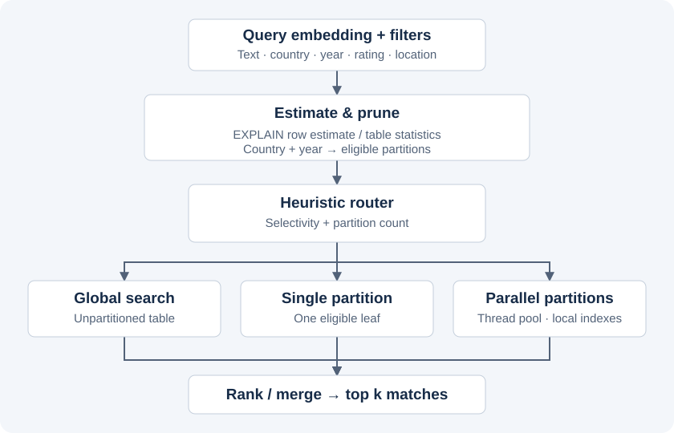

Hybrid retrieval across 18 database partitions
A team-built vector search system combining semantic similarity, structured filters, and geospatial queries over 515K hotel reviews. Country-and-year partitioning narrows the search space, while a heuristic router selects global search, a single local index, or concurrent searches across eligible partitions.
- Lower average latency
- 22%
- Recall@10
- 98.5%
- Hotel reviews
- 515K
Course evaluation: hybrid search averaged 2,018 ms, compared with 2,603 ms for the global ANN baseline. These results describe the report’s experimental workload, rather than a performance guarantee for this implementation.
The database spans six countries, three review years, and 18 partitions, with 1,536-dimensional embeddings. Each partition has its own HNSW index; PostGIS applies geographic distance filters.
Architecture and query routing
PostgreSQL stores an unpartitioned copy for global search and a partitioned copy with 18 leaves: six countries, each divided into three years. Both use pgvector HNSW indexes; PostGIS handles distance filters.

HNSW indexes use m = 16 and ef_construction = 64. GiST indexes support spatial predicates, while B-tree indexes support scalar filters. The global table and partitioned copy contain the same reviews so the retrieval strategies can be compared.
How the router chooses a strategy
Selectivity here means the estimated fraction of rows that survive the filters. A lower fraction means a more restrictive query. This avoids the ambiguity of calling a query “high selectivity”: in the report, that phrase means a highly restrictive filter.
- Identify eligible partitions. France selects its three year partitions; France plus 2016 selects one. Without country or year filters, all 18 are eligible.
- Estimate matching rows.
EXPLAIN (FORMAT JSON)plans a query with the same city, score, nationality, date-year, and distance predicates used for retrieval. It returns a row estimate without executing the search. - Calculate the matching fraction. Divide estimated matching rows by the global table’s estimated row count from PostgreSQL statistics.
- Choose the route. Apply the following rules in order. The router returns the estimate and decision reason alongside the results.
| Condition | Execution | Reason |
|---|---|---|
| One eligible partition | Single local HNSW search | Search one index without thread-pool coordination. |
| 2–10 partitions and 1–30% estimated matching rows | Parallel local searches | Pruning may save enough index work to justify several queries. |
| More than 10 partitions, a matching fraction outside that range, or unavailable statistics for multiple partitions | Global search | Avoid broad fan-out or a parallel decision based on missing statistics. |
Example: suppose a France query leaves three eligible partitions and PostgreSQL estimates 50,000 matching rows out of 515,000. The matching fraction is about 9.7%, so the router selects parallel search. Adding a year reduces the query to one local index. An unfiltered query covers all 18 partitions and takes the global path. The row estimate in this example is illustrative.
The 1–30% range and partition limit are configurable heuristics, not experimentally established optimal thresholds. The report evaluates a two-path policy: global search for narrow or broad queries, and parallel search for 2–10 partitions. Its results should be read in that context; the implementation’s single-partition route is local HNSW.
From partition queries to the final top 10
A Python ThreadPoolExecutor dispatches local queries through a shared ThreadedConnectionPool, with up to ten workers. Connections are reused instead of opened for every partition query.
Local searches default to ef_search = 200; the global path uses at least 400. This parameter controls the HNSW search candidate list: larger values generally trade more search work for better recall.
For a top-10 request, each parallel search retrieves 15 candidates. The coordinator collects the results, sorts them by cosine similarity, and returns the best ten. Extra candidates provide headroom for approximate retrieval; they do not make it exact.
All paths apply the same predicates, including city and geographic radius. A partition failure propagates as an error, and each read transaction ends after its query so planner settings do not leak into later searches.
Evaluation and retrieval quality
The course evaluation compares three approaches on the same filtered queries. Exact search supplies the reference top-k set; global ANN uses ef_search = 400; hybrid retrieval uses partition pruning and parallel local searches for medium-selectivity queries.
- Exact search · average
- 2,338 ms
- Global ANN · average
- 2,603 ms
- Hybrid · average
- 2,018 ms
The report records 100% recall for the exact and global baselines and 98.5% for hybrid retrieval. Recall@10 counts how many of the exact top ten also appear in the approximate result. The latency reduction trades a small loss in recall for less retrieval work.
Queries are grouped into restrictive single-partition queries, medium queries spanning 2–10 partitions, and broad queries. The evaluation warms the search paths before measurement and examines both latency and recall as ef_search varies. The report’s clearest gains occur in the medium group; the aggregate result is not a uniform speedup across all queries.
Environment: managed PostgreSQL 16 with 4 vCPUs, 8 GB RAM, and 140 GiB SSD storage. The benchmark client ran on a separate AMD EPYC research server with 256 CPU threads and 1.5 TB RAM. Network round trips and client-side merging contribute to the observed latency.
What the experiments taught us
One partition can still be large. The report describes a UK/2016 partition with more than 130,000 reviews. Restricting a query to one partition did not automatically make exact distance calculations cheaper than HNSW search. Partition count and matching row count answer different questions.
Connection setup can erase parallel gains. Early experiments opened connections for individual tasks. Reusing a connection pool reduced that overhead and made the parallel path more predictable.
The dataset is uneven. The report attributes 50.9% of reviews to London and 51.3% to 2016. Equal numbers of partitions do not imply equal workloads, which is why row estimates matter alongside partition pruning.
Engineering tradeoffs
More partitions mean more queries, connections, and candidates to merge. A narrow filter can help local search, but partitioning alone does not make every query faster. The router returns its row estimate, chosen strategy, and reason so those decisions can be inspected.
Parallel searches fetch extra candidates before merging the top matches. That can improve approximate retrieval, but does not guarantee exact recall. Stale statistics and correlated filters can also lead to poor routing estimates.
Shared filter construction keeps query semantics consistent across strategies. Each read transaction ends after the query, and a failed partition fails the search rather than quietly returning an incomplete result.